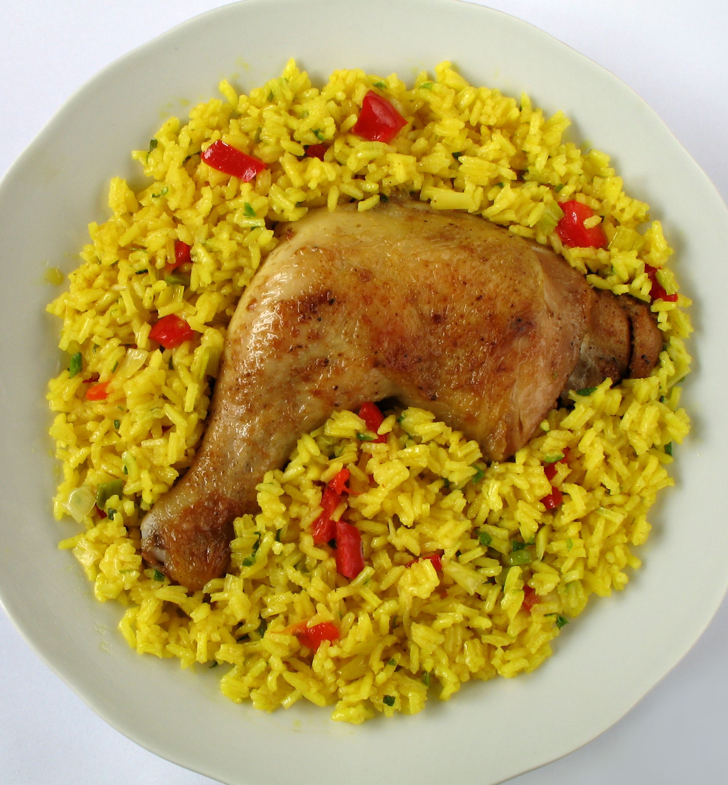
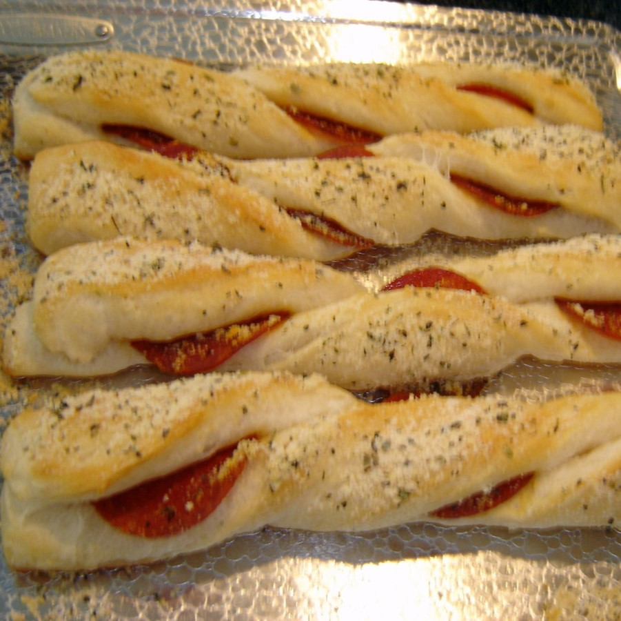
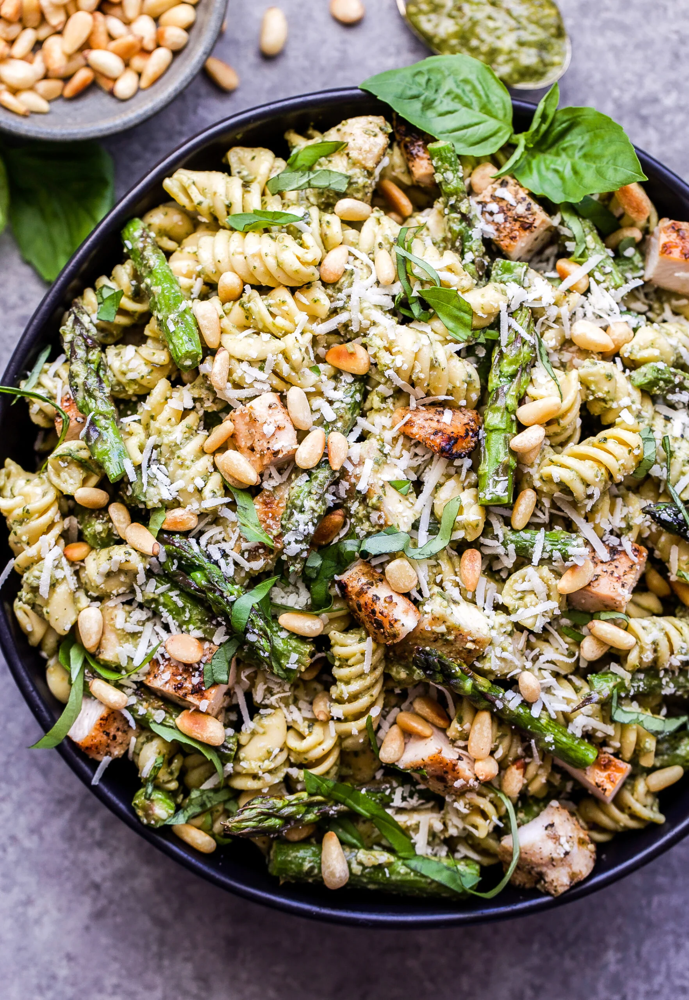
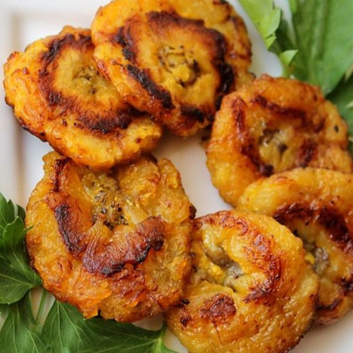
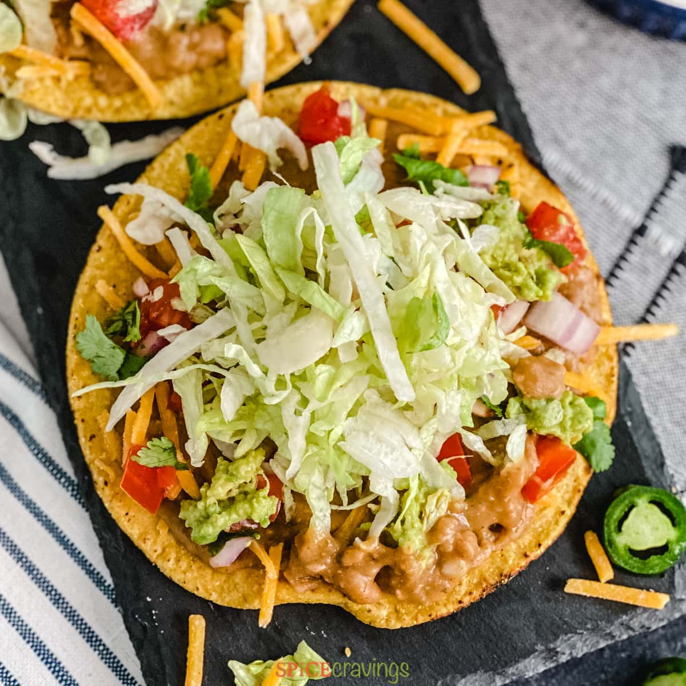

Arroz Con Pollo
Ingrediants
- chicken thigh
- vegetable oil
- yellow onion
- green bell pepper
- red bell pepper
- long grain rice
- garlic cloves
- chicken stock
- tomato sauce
- assorted seasoning

Eggplant Parm
Ingrediants
- eggplant
- breadcrumbs
- dried oregano
- vegetable oil
- all-purpose flour
- large eggs
- whole milk
- olive oil
- marinara sauce
- mozzarella cheese
- parmesan cheese

Gallo Pinto
Ingrediants
- rice
- black beans
- onion
- garlic cloves
- worcestershire sauce
- cilantro
- salt
- pepper

Pepperoni Sticks
Ingrediants
- premade pizza dough
- mozzarella cheese
- pepperoni
- butter
- garlic cloves
- parmesan cheese
- marinara sauce

Chicken Pesto Pasta
Ingrediants
- choice of pasta
- pesto sauce
- parmesan cheese
- baby tomatoes
- pine nuts
- chicken

Pupusas
Ingrediants
- green cabbage
- chayote squash
- carrots
- red onion
- red bell pepper
- cider vinegar
- dried oregano leaves
- masa harina
- salt
- olive oil
- cotija cheese
- choice of additional fillings

Banana Foster
Ingrediants
- bananas
- walnuts
- brown sugar
- vanilla extract
- dark rum
- butter
- cinnamon
- salt
- vanilla ice cream


Chicken Tostadas
Ingrediants
- tostada tortillas
- chicken
- tomatoes
- lettuce
- refried beans
- sour cream
- salsa